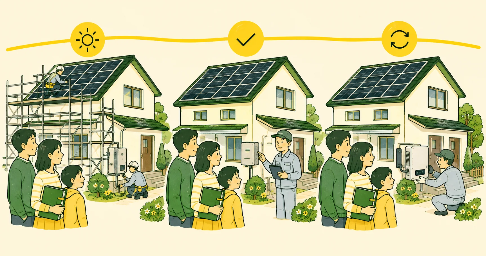

この記事で分かること
- 初期費用診断が前提とする設備・工事費の範囲が分かります．
- 維持・交換費20年間に計上する点検と機器交換の時期を確認できます．
- 個別確認する費用修理，撤去，屋根工事等，概算へ含めない支出を区別できます．
「設置価格のほかに何がかかるのか」「点検や交換はいつ発生するのか」「診断に含まれない支出は何か」．表示された設置額だけでは，20年間の家計負担を判断できません．
初期費用に加え，発生する年を分けて定期点検とパワーコンディショナ交換を見込みます．突発的な修理，屋根工事に伴う撤去・再設置，保険，借入および税金は個別条件として別に確認します．
維持費を含む概算を確認する
標準的な初期費用，定期点検費および機器交換費を含めて，20年間の収支を計算します．
住宅固有の費用を確かめる
見積もりサービスの利用は無料です．現地調査費は施工会社・条件で確認します．
広告・アフィリエイトを含みます．
初期費用の前提
| 標準設備容量 | 4 kW |
|---|---|
| 1 kW当たり導入費用 | 331,100円 |
| 補助金控除前の概算 | 1,324,400円 |
| 標準蓄電池を選ぶ場合 | 9.5 kWhの設備費・工事費1,149,500円を加算． |
診断の1 kW当たり導入費用は，設備費と工事費を含む既築住宅の平均値です．一方，経済産業省の2026年資料では，2025年に設置された住宅用太陽光のうち新築案件について，システム費用の平均値28.9万円／kW，中央値29.4万円／kWが示されています．母集団の異なる統計値であり，既築住宅の診断値や個別見積価格へ置き換える値ではありません．資料に示された費目別平均は表示単位で丸められているため，内訳の表示値を足した金額と総額に丸め差が生じ得ます．
「価格」が指す範囲を分ける
- 本体価格：パネルやパワーコンディショナ等の機器単体の価格です．
- システム費用の統計：特定の母集団について，設備費と工事費等を集計した参考値です．
- 標準工事込みの見積額：施工会社が標準とする工事範囲を含む提示額です．標準工事の定義は会社ごとに確認します．
- 現地調査後の最終見積額：住宅固有の施工条件を反映し，契約前に確定させる金額です．
屋根面数が増えると架台と配線の構成が複雑になり，屋根材によって固定金具と防水処理が変わります．建物の高さや作業空間は足場に，分電盤・パワーコンディショナの位置と配線の引回しはケーブル長，壁の貫通および仕上げ復旧に影響します．重量のある機器は，搬入経路によって揚重や人員の条件も変わります．足場，申請，既存設備の撤去・処分，配線，搬入および保証が含まれるか，含まれないか，条件付きかを費目ごとに確認します．これらの必要性は現地調査で確認し，全国一律の追加額は置きません．
蓄電池は「容量」だけで比較しない
蓄電池の公称容量は電池に蓄えられる名目上の容量，実効容量は製品が定める使用範囲を反映した初期の容量です．実際に家庭で利用できる電力量は，その時点の使用可能容量に充放電効率，保護制御，残量および運転モードが影響します．一方，出力は同時に動かせる機器の大きさに関わり，容量とは別の性能です．
容量保証の下限，保証期間，メーカーが想定する使用期間およびサイクル期待寿命も分けて確認します．容量保証は所定条件下での下限，サイクル期待寿命は所定試験条件による期待値であり，両者は同じ意味ではありません．診断の15年後60％は，公開された保証下限を用いた保守的な感度パスです．16～20年目は同じ低下率を継続した数学的外挿であり，実測値でもメーカー保証でもありません．20年間無交換とする取扱いも，評価用のモデル仮定です（オムロン ソーシアルソリューションズ，2026a，b）．
計算へ含める維持・交換費
| 定期点検 | 38,000円／回を4，8，12，16，20年目に計上．20年間で190,000円． |
|---|---|
| パワーコンディショナ交換 | 交換費384,000円を15年目に計上． |
| 標準蓄電池交換 | 20年間は交換せず，交換費0円として計算． |
| 合計 | 574,000円．太陽光のみ，太陽光＋標準蓄電池のいずれも，入力容量にかかわらない固定費として扱う現行モデルの仮定． |
経済産業省の2026年資料は，住宅用5 kW設備を想定した業界ヒアリング値として，点検を3～5年ごとに1回程度，費用を約3.8万円／回，パワーコンディショナ交換を20年間に1回，費用を約38.4万円と示しています．特定製品の保証価格や個別見積価格ではなく，実際の費用は点検範囲，足場，機器，保証および施工条件で異なります．
診断では，3～5年ごとの中点を4年として点検を4，8，12，16，20年目に置き，20年間に1回の交換を15年目に置きます．いずれも支出時点を定めるサービス評価仮定であり，資料自体が15年目の交換を定めているわけではありません．
JPEAは専門業者による定期点検を設置後1年，その後は4年ごとに推奨しています．これは推奨時期であり，その頻度自体を一律の法定義務とは扱いません．設備の状態と契約を確認し，販売店，工務店またはメーカーへ相談してください．

計算へ含めない費用
- 突発的な修理：故障の有無と修理額を一律に置けないため，定期点検と機器交換以外は含めません．
- 屋根工事との調整：屋根の補修・葺き替え時に，パネルの一時撤去や再設置が必要になる場合があります．
- 撤去・処分：故障，建替えまたは屋根工事等で設備を撤去する場合に費用が発生します．
- 保険・借入・税金：契約や利用者の条件によって異なるため，計算へ含めません．
パワーコンディショナの実際の交換時期は，製品，設置環境，使用状況および保証条件で異なります．診断の15年目という時点は評価用の配置であり，15年目の故障や交換を保証するものではありません．
注意点
点検契約を急がない
国民生活センターは，「点検が義務化された」などとして高額契約を勧める事例を注意喚起しています．訪問や電話で契約を急かされてもその場で契約せず，設置事業者やメーカーへ必要性を確認し，複数社の内容と価格を比較します．
まとめ
現在の診断では，設備・工事費，4年ごとの定期点検費および15年目のパワーコンディショナ交換費を，発生時期に沿って計上します．標準蓄電池は20年間交換せず，交換費0円とするモデル仮定です．
突発的な修理，撤去，保険，借入および税金は含まれません．概算と実額を混同せず，見積書では追加工事，保証対象外の条件，点検契約および長期の連絡窓口を確認してください．
維持費を含む概算を確認する
標準的な初期費用，定期点検費および機器交換費を含めて，20年間の収支を計算します．
住宅固有の費用を確かめる
見積もりサービスの利用は無料です．現地調査費は施工会社・条件で確認します．
広告・アフィリエイトを含みます．
参考文献
- 太陽光発電協会「機器の耐用年数はどれくらいですか？」
- 太陽光発電協会「長く使っていただくために」
- 資源エネルギー庁「FIT・FIP制度 よくある質問」
- 国民生活センター「太陽光発電システムの点検商法が急増！」
- 京セラ「太陽光発電の設置費用はいくら？」
- 京セラ「設置工事の流れについて」
- オムロン ソーシアルソリューションズ「KPBP-A マルチ蓄電プラットフォーム カタログ」
- オムロン ソーシアルソリューションズ「KPBP-Bシリーズ 蓄電池ユニット仕様」
公開データを確認しています．